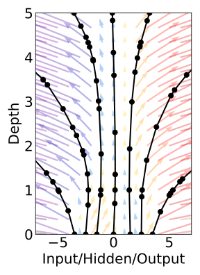

Neural Ordinary Differential Equations
Recap: ODE
\[ \frac{d^2\bold{x}}{d t^2} = \frac{F(\dot{\bold{x}}, \bold{x}, t)}{m} \]\[F(t, \bold{x}, \bold{x}^{(1)}, ... , \bold{x}^{(n-1)}) = \bold{x}^{(n)}\]
Stochastic ODE
Initial value problem
\[ \begin{cases} \frac{dx}{dt} = f(x(t), t)) \\ x(t_0) = x_0 \end{cases} \]\[ x(t) = x(t_0) + \int_{t_0}^{t} f(x(t), t)dt \]
Quizz
What is the difference between an ordinary differential equation (ODE) and a partial differential equation (PDE)?Here is some GPT to "help"
\[\begin{aligned} x(t) & = x(t_0) + \int_{t_0}^{t} f(x(t), t)dt \\ & = -\ln(3) + \int_{\pi/2}^{t} \sin(t)+1/t dt \\ & = -\ln(3) + \left[ -\cos(t) + \ln(t) \right]_{\pi/2}^{t} \\ & = -\ln(3) + \left[ -\cos(3\pi) + \ln(3\pi) \right] - \left[ -\cos(\pi/2) + \ln(\pi/2) \right] \end{aligned}\]
Surprisingly enough, it's correct
Numerical integration of ODE
Euler's method
Euler's method
\[\tilde{x}(t+\tau) = \tilde{x}(t) + \tau f(\tilde{x}(t), t)\]
Instability
Error estimation
\[x(t+\tau) = x(t) + x'(t)\tau + \frac{1}{2} x''(t) \tau^2 + O(\tau^3)\]
\[x(t+\tau) - \tilde{x}(t+\tau) = \frac{1}{2} x''(t) \tau^2 + O(\tau^3) \]
\[\sum_{s=1}^{\frac{t-t_0}{\tau}} \left[\frac{1}{2} x''(t_0+s\tau)\tau^2+O(\tau^3)\right]=C(t-t_0)\tau + O(\tau^2)\]
Midpoint method
Midpoint math
What is the order of the method?
Runge-Kutta method
Sorry, I got lazy with the Copilot
Runge-Kutta method


Runge-Kutta
Für das Protokoll
\[ \begin{aligned} k_1 & = f(x_n,t_n) \\ k_2 & = f(x_n+\tau k_1/2, t_n+\tau/2) \\ k_3 & = f(x_n+\tau k_2/2, t_n+\tau/2) \\ k_4 & = f(x_n+\tau k_3, t_n+\tau) \\ x_{n+1} &= x_n+\frac{1}{6}\tau (k_1+ 2k_2+2k_3+k_4) \end{aligned} \]
When is an ODE integration method is called 3-rd order?
- In uses a 3-rd order polynomial
- Its local truncation error is of the order $O(\tau^3)$, where $\tau$ is the time step
- Its total accumulated error is of the order $O(\tau^3)$, where $\tau$ is the time step
- It uses 3 evaluations of the derivative function $f(x(t), t)$
Neural Ordinary Differential Equations
ResNet


Reuse weights between layers
\[\bold{z}_{l+1}=\bold{z}_l+f_\theta(\bold{z}_l, l)\]
Layer index → time
\[\frac{d\bold{z}}{dt}=f_\theta(\bold{z}(t), t)\]
ODE network

NeuralODE definition
Training NeuralODE
Optimisation problem
\[\argmin_\theta \mathbb{E}_{\bold{x}\in X, \bold{y}\in Y}L\left(\bold{y}, \text{ODESOLVE}(\bold{x}, f, t_0, t_1,\theta)\right)\]
Can we backprop?
Yes, but for $O\left(N_\text{steps}\right)$ memory
Meet adjoint
\[ \begin{aligned} \bold{z}(t_1) & = \bold{z}(t_0) + \int_{t_0}^{t_1}f(\bold{z}(t),t,\theta)dt \\ \bold{a}(t) & = \partial L / \partial \bold{z}(t) \\ \frac{d\bold{a}}{dt} & = -\bold{a}(t)^T\frac{\partial f(\bold{z}(t),t,\theta)}{\partial \bold{z}} \end{aligned} \]
Adjoint with trajectory loss
NeuralODE vs RNN
For time series- Native support of irregular time intervals
- Smooth trajectory
Neural ODE in a generative model
Time series
Hidden space trajectories
ODE-RNN
Noisy data

Latent ODE aka ODE-VAE
\[z_0 \sim p(z_0)\] \[z_0, z_1, …, z_N = \text{ODESolve}(f_\theta, z_0, (t_0, t_1, …, t_N))\] \[x_i \overset{\text{indep.}}{\sim} p(x_i| z_i); i = 0, 1, …, N\]
Step 1: estimate posterior for $z_0$
$$ q(z_0| \{x_i, t_i\}_{i=0}^N) = \mathcal{N}(\mu_{z_0},\sigma_{z_0}) $$ $$ \mu_{z_0},\sigma_{z_0} = g_\phi(\text{ODE-RNN}_\phi ( \{x_i, t_i\}_{i=0}^N)) $$
Step 2: latent dynamics
$$ \text{ODESolve}(f_\theta, z_0, (t_0, t_1, …, t_N)) $$
Step 3: predict
Sample $p(x_i|z_i)$Latent ODE
Physics: initial state is full state

Last touch: parameters
$$ \frac{d\bold{z}}{dt}=f_\theta(\bold{z}(t),t,\mu) $$Summary
- Neural ODEs are a natural model for modeling processes continuous in time
- In physics, a lot of processes also are subjects to conservation laws - see the next lecture
- NeuralODE can be used as a general-purpose supervised model, but is not necessarily superior in this role
References
- Chen, Ricky TQ, et al. "Neural ordinary differential equations." Advances in neural information processing systems 31 (2018)
- Rubanova, Yulia, Ricky TQ Chen, and David K. Duvenaud. "Latent ordinary differential equations for irregularly-sampled time series." Advances in neural information processing systems 32 (2019)
- Lee, Kookjin, and Eric J. Parish. "Parameterized neural ordinary differential equations: Applications to computational physics problems." Proceedings of the Royal Society A 477.2253 (2021): 20210162.
- Interactive visualisations by Oleg Danilov
- Our textbook on NeuralODE